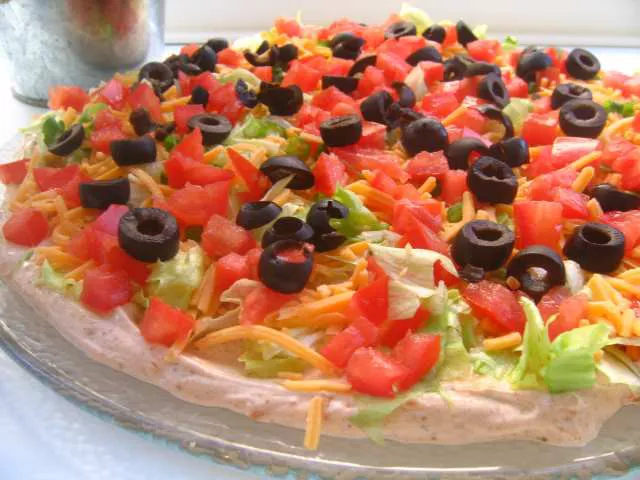

Home
Taco Dip

Description
This taco dip is simple and scrumptious. It's delicious even when I use low-fat Cheddar and low-fat sour cream! Serve with baked tortilla chips for dipping.
Ingredients
- 1 (16 ounce) container nonfat sour cream
- 1 (8 ounce) package cream cheese, softened
- 1 (1.25 ounce) package taco seasoning mix
- 1/4 head iceberg lettuce
- 1 cup shredded cheddar cheese
- 3 medium chopped tomatoes
- 1 medium green bell pepper, chopped
- 1 (2.25 ounce) can black olives, drained
Steps
- Mix sour cream, cream cheese, and taco seasoning together in a medium bowl until smooth. Spread mixture in a 9- or 10-inch round serving dish.
- Top with shredded lettuce, then sprinkle Cheddar cheese, tomatoes, bell pepper, and black olives on top.